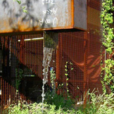

- 30 case studies illustrate the transformative effects of sustainable landscape design.
California Academy of Sciences
San Francisco, California, U.S.A.
ChonGae Canal Point Source Park
Seoul, South Korea

Sidwell Friends School
Washington, D.C., U.S.A
Gowanus Canal Sponge Park™
Brooklyn, New York, U.S.A.
Geos Net Zero Energy Neighborhood
Arvada, Colorado, U.S.A.

Crosswaters Ecolodge
Nankun Mountain Reserve, Guangdong Province, China
James Clarkson Environmental Discovery Center
White Lake Township, Michigan, U.S.A.

Garden/Garden — A Comparison in Santa Monica
Santa Monica, California, U.S.A.
Lily Lake Residence
Dalton, Pennsylvania, U.S.A.

California Institute of Technology Master Plan
Pasadena, California, U.S.A.
Park 20/20:
A Cradle to Cradle Inspired Master PlanHaarlemmermeer, Netherlands
High Point
Seattle, Washington, U.S.A.

Bryant Park
New York City,
New York, U.S.A.Rooftop Haven for Urban Agriculture
Chicago, Illinois, U.S.A.

NE Siskiyou Green Street
Portland, Oregon, U.S.A.
Pacific Cannery Lofts
Oakland, California, U.S.A.

From Brownfield to Greenfield
Wellesley, Massachusetts, U.S.A.

Greensburg Sustainable Comprehensive Plan
Greensburg, Kansas, U.S.A.

Transit Revitalization Investment District (TRID) Master Plan
Philadelphia, Pennsylvania, U.S.A.

Mount Tabor Middle School Rain Garden
Portland, Oregon, U.S.A.
Transformative Water
Pitkin County, Colorado, U.S.A.

Viet Village Urban Farm
New Orleans, Louisiana, U.S.A.

HtO Park
Toronto, Canada

The Crack Garden
San Francisco,
California, U.S.A.
Kresge Foundation Headquarters
Troy, Michigan, U.S.A.

Washington Mutual Center Green Roof
Seattle, Washington, U.S.A.
High Line Park
New York City,
New York, U.S.A.
The Red Ribbon, Tanghe River Park
Qinhuangdao City,
Hebei Province, ChinaNueva School
Hillsborough, California, U.S.A

Underwood Family Sonoran Landscape Laboratory
University of Arizona, Tucson, Arizona, U.S.A.

 This Web site has been made possible through a grant by:
This Web site has been made possible through a grant by: